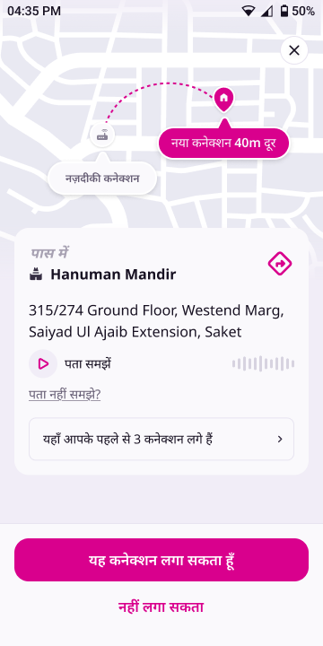
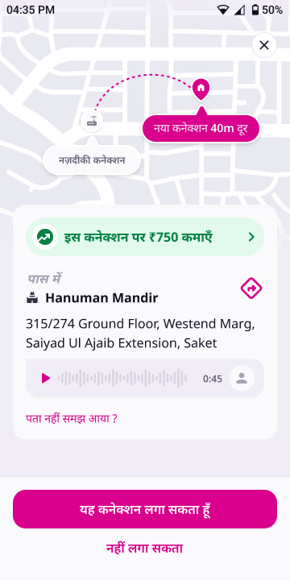
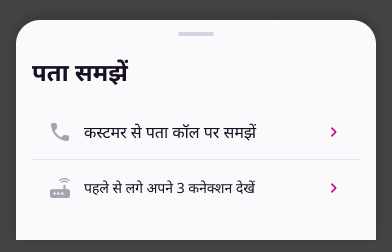
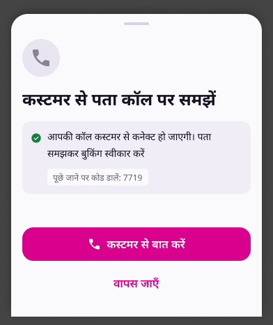
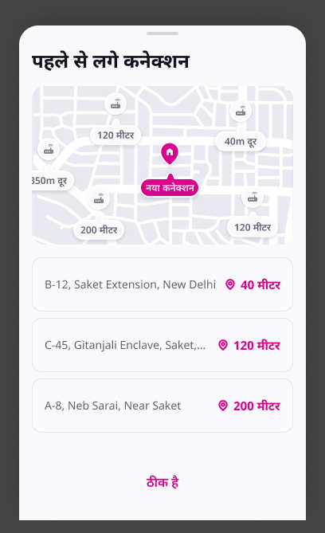

Partner App · Booking decision screen · Design update
Three changes to the screen where a partner decides on a new booking: a new audio address player, one entry point for help with the address (in place of two), and tighter spacing so the card fits the new structure.
At a glance
A chat-bubble player: play/pause, a full-width waveform, the duration and a customer avatar. The पता समझें label goes.
The पता नहीं समझे? link and the nearby-connections row become one link. It opens a sheet: call the customer, or see your nearby connections.
Gaps inside the address card get smaller, and the nearby row leaves the card. The new values are marked in Figma and listed below.


Where this applies. The card is one composable, BookingFpnOverlay. It is rendered in two places, and both get the change: the booking FPN (MainActivity) and the booking drilldown (BookingFlowContent). The call sheet and the nearby-connections sheet stay as they are. Only the way you reach them changes.
Change 01
The player now looks like a voice note from the customer. Before, it was a small play button, the पता समझें label and a 12-bar waveform pushed to the right. Now it is one tinted bubble that runs the full width of the card.
| Part | Spec | Before |
|---|---|---|
| Container | Full card width × 48dp tall · bg bg/subtle #F1EDF7 · padding 12 H / 8 V · radius 16 on top-right, bottom-right and bottom-left, 0 on top-left (bubble tail) · gap 8 between the parts | 36dp row, no container |
| Play / pause | 24dp icon in brand #D9008D, with no circle behind it. Shows play when idle and pause while playing | 36dp grey circle with a 14dp icon |
| Label | Removed | पता समझें |
| Waveform | Fills all the width left over, 4dp after the icon · 32dp tall · bars 2.5dp wide, 2dp apart, radius 2, heights 5 to 24dp · idle bars bg/disabled #D7D3E0 · while playing, bars up to the playhead turn bg/brand #D9008D | 12 fixed bars, right-aligned |
| Duration | 0:45 · type/label/sm 12/16 SemiBold · text/subtle #665E75 · always visible | Only while playing, as a -m:ss countdown |
| Avatar | 32dp circle, bg bg/default #FAF9FC, 20dp user_name icon. Shows that this is the customer's voice. Display only | Did not exist |
Tracking does not change: address_audio_played still fires on play.
Change 02
The card used to offer two separate ways to work out an address. The पता नहीं समझे? link opened the call sheet. A bordered row, यहाँ आपके पहले से 3 कनेक्शन लगे हैं, opened the nearby-connections sheet. Both solve the same problem, so they now sit behind one link. The nearby row is removed from the card.
Label/L2_14_Regular 14/20 · brand #D9008D · no underline · left-aligned. Before, it was bodyMd in textSecondary with an underline.
bg/default · top radius 24 · drag handle 36×4 stroke/subtle (handle row 12 top, 8 bottom) · content 12 top, 24 bottom, 16 sides. There is no CTA. It closes on drag, scrim tap or system back.type/heading/lg 24/32 Bold · 16dp to the list.List Item, Type=Default · min-height 48 · padding 16 · gap 12 · 24dp leading icon · 20dp chevron on the right in brand · 1dp divider between rows.Opens the existing call sheet, AddressUnclearSheet, with the IVR call and the code chip. Same behaviour as today's link.
Opens the existing NearbyConnectionsSheet (map + list). Same behaviour as today's nearby row. {count} is the existing nearbyConnectionsCount.


The layouts don't change. One copy difference: the Figma call-sheet CTA reads कस्टमर से बात करें, while the live string is कस्टमर से बात करवाएँ. See the copy table.
Change 03
The card padding is unchanged at 16dp. The gaps inside the card are smaller. Values are from the Figma auto-layout. Token names are the WiomSpacing equivalents.
| Gap | Current | New |
|---|---|---|
| ₹750 banner → पास में | 16 · lg | 16 · lg (same) |
| पास में → landmark name | 4 · xs | 0 |
| Landmark row → address | 16 · lg | 8 · sm |
| Address → audio bubble | 12 · md | 8 · sm |
| Audio bubble (or address, if there is no audio) → link | 8 · sm | 16 · lg |
| Link → nearby row | 16 · lg | Row removed |
| Landmark block → directions icon (horizontal) | space-between | 12 · md, icon vertically centred on the 2-line block |
| Bottom CTA bar padding | 16 all sides | 16 top · 24 bottom · 16 sides |
| Bottom CTA bar top edge | none | 1dp stroke/default #E8E4F0 |
| नहीं लगा सकता (tertiary) vertical padding | 8 · sm (40dp tall) | 4 · xs (32dp tall) |
| Primary → tertiary CTA | 8 · sm | 8 · sm (same) |
Figma shows the address and its locality as one paragraph. Render them with no extra gap between the lines. Today there is a 4dp gap.
Strings
Keys live in booking_labels_hi_en.json. The key names for the new sheet are suggestions.
| Key | Hindi | English | Status |
|---|---|---|---|
booking.address_unclear | पता नहीं समझे ? पता नहीं समझ आया ? | Didn't understand the address? | Changed |
booking.address_help.title | पता समझें | Understand the address | New |
booking.address_help.option_call | कस्टमर से पता कॉल पर समझें | Understand the address from the customer on call | New (same text as the call-sheet title) |
booking.address_help.option_nearby | पहले से लगे अपने {count} कनेक्शन देखें | See your {count} existing connections | New |
booking.address_unclear.cta_connect | कस्टमर से बात करवाएँ कस्टमर से बात करें | Talk to the customer | Changed (confirm, see Q5) |
booking.fpn.nearby_connections | यहाँ आपके पहले से {count} कनेक्शन लगे हैं | — | No longer used on this card |
drilldown.play_address_audio | पता समझें | — | Removed from the player (see Q1) |
Before build
Figma doesn't settle these. Each has a suggested default so build doesn't stall, but please confirm.
AddressVoiceNote) is shared with the install drilldown, deliberately, so the two can't drift. The Figma only shows the booking card.Restyle the shared component so both surfaces get it.0:45. Today the player counts down.Count down while playing (elapsed shown as fill), and show the total when idle.type/body/lg 16/24 and Row 2 is L2_14_Regular 14/20. One of them is probably unintended.